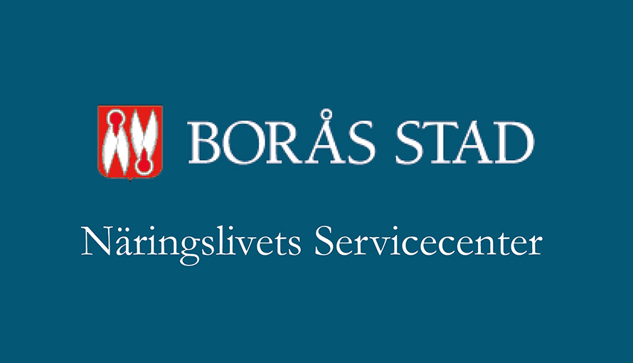
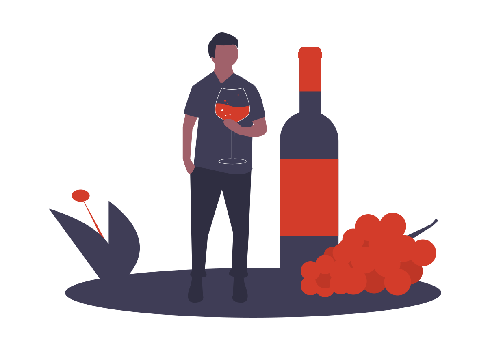

Företagare
-

Information till företagare kopplat till corona
Här har vi samlat information för företag gällande coronaviruset från flera myndigheter, företagarföreningar och organisationer samt information direkt till företag men också till allmänheten från Borås Stad...
-

Företagsakuten naringsliv-lots@boras.se
I och med den rådande situationen med coronaviruset och dess effekter utökar vi stödet till näringslivet i Borås genom Företagsakuten. Där kan lokala och regionala näringsidkare få råd, stöd och svar på frågor från våra näringslivsutvecklare och konsulter...
-

Näringslivets servicecenter
Till Näringslivets servicecenter är du som är företagare eller som vill starta företag välkommen med dina frågor och funderingar. Lotsfunktion för företag gällande Covid-19/Coronaviruset Med tanke på senaste tidens utveckling har vi också genom Näringslivets Servicecenter inrättat en lots för kommunens företagare som har frågor...
-

Förlängt serveringstillstånd på uteserveringar
Under coronapandemin har många verksamheter fått en snabb nedgång av antalet gäster. För att om möjligt lindra de negativa effekterna som virusets spridning har på verksamheterna i Borås, beslutade...